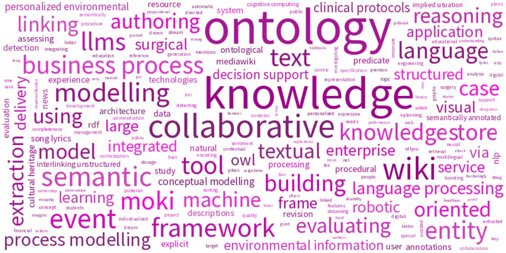

About me
Associate Professor of Informatics (INF/01) at the University of Verona, within the Department of Foreign Languages and Literatures
Previously: Research Scientist at Fondazione Bruno Kessler (FBK), Trento, Italy
Curriculum Vitae: EN - IT (Updated: Oct 16, 2023)
Erdös Number: 3 (Marco Rospocher → Romeo Rizzi → Pavol Hell → Paul Erdös)
Appointments

Director of the interdisciplinary research center "Digital Arena for Inclusive Humanities (DAIH)". DAIH is a center of excellence in the field of digital technologies and computational analysis applied to languages and literature, and aims to promote and facilitate inclusion in research, infrastructure, training, and dissemination of scientific content in order to overcome the disparities, inequalities, and discriminations of modern society
[web-site]
Education
- Ph.D. in Information and Communication Technologies
ICT School, University of Trento, Italy
Mar 31, 2006
Thesis: On the computational complexity of enumerating certificates of NP problems
Advisor: Prof. Romeo Rizzi
[manuscript] [slides] - M.Sc. (Laurea) degree in Mathematics
University of Trento, Italy
Mar 27, 2002
Thesis: All-Pairs and Matching-like Shortest Paths Algorithms
Advisor: Prof. Romeo Rizzi
Awards
- Best Research Paper Award at the IEEE 18th International Enterprise Distributed Object Computing Conference EDOC2014 (September 1-5, 2014 - Ulm, Germany) for the contribution "The Role of Semantic Annotations in Business Process Modelling" (Chiara Di Francescomarino, Marco Rospocher, Chiara Ghidini, Andrea Valerio)
[certificate] - Runner-up Prize at the Ontology Competition of the 8th International Conference on Formal Ontology in Information Systems FOIS2014 (September 22-26, 2014 - Rio de Janeiro, Brasil) for the contribution "An ontology for personalized environmental decision support" (Marco Rospocher)
[certificate] - Semantic Sentiment Analysis Award (Task 3 - Frame entities Identification) at the Semantic Web Evaluation of the 12th European Semantic Web Conference ESWC2015 (May 31-June 4, 2015 - Portoroz, Slovenia) for the contribution "Opinion frame extraction from news corpus" (Francesco Corcoglioniti, Alessio Palmero Aprosio, Marco Rospocher)
[certificate] - Honorable Mention Award at the In-Use Track of the 7th International Semantic Web Conference ISWC2008 (October 26-30, 2008 - Karlsruhe, Germany) for the contribution "Deploying semantic web technologies for work integrated learning in industry. A comparison: SME vs. large sized company" (Conny Christl, Chiara Ghidini, Joanna Guss, Viktoria Pammer, Stefanie Lindstaedt, Marco Rospocher, Peter Scheir, Luciano Serafini)
[info] - Distinguished Program Committee Member at the 27th International Joint Conference on Artificial Intelligence and the 23rd European Conference on Artificial Intelligence (IJCAI-ECAI 2018)
[info]
Projects
Inclusive Humanities (MUR Dipartimenti di Eccellenza)
Prospettive di sviluppo nella ricerca e nella didattica delle lingue e letterature straniere
Jan 1, 2023 - Dec 31, 2027
With this project, the department aims to contribute to addressing several global challenges that have emerged in recent years. The pandemic emergency, the ecological crisis, and the current situation of geopolitical instability on a global level require universities to rethink their social function from an inclusive and digital perspective, aimed at widespread dissemination and sharing of scientific knowledge to the general public. These challenges require a rethinking of content and its accessibility, as well as experimentation in innovative and blended teaching methods in the field of foreign languages and literatures, aimed particularly at user groups that have not been adequately considered so far. The main purpose of the plan is to promote and foster inclusion in research, teaching, infrastructure, and the dissemination of scientific content in order to overcome gender, economic, social, and cultural disparities both within and outside the university.
NexusLinguarum (COST Action, CA18209)
European network for Web-centred linguistic data science
Jan 1, 2019 - Dec 31, 2023
[www]
The main aim of this Action is to promote synergies across Europe between linguists, computer scientists, terminologists, and other stakeholders in industry and society, in order to investigate and extend the area of linguistic data science.
Le Digital Humanities applicate alle lingue e letterature straniere (MIUR Dipartimenti di Eccellenza)
Jan 1, 2018 - Dec 31, 2022
[www]
The Department of Foreign Languages and Literatures of the University of Verona, awarded as Department of Excellence by the National Agency for the Evaluation of the University and Research System (ANVUR), obtained a ministerial funding of 6 million euros for the realization of an interdisciplinary project, which will allow the department to become a center of excellence and a laboratory of experimentation, both for research and for teaching, nationally and internationally, in the field of digital humanities applied to foreign languages and literature. The project focuses on the preservation and dissemination of cultural heritage, innovatively enhancing digital methodologies to broaden and better realize the research areas in two areas: philological-literary and linguistic.
NewsReader (EU FP7 Strep Project, Grant 316404)
Building structured event indexes of large volumes of financial and economic data for decision making
Jan 1, 2013 - Dec 31, 2015
[www]
NewsReader will process news in 4 different languages when it comes in. It will extract what happened to whom, when and where, removing duplication, complementing information, registering inconsistencies and keeping track of the original sources. Any new information is integrated with the past, distinguishing the new from the old and unfolding story lines in a similar way as people tend to remember the past and access knowledge and information. The difference being that NewsReader can provide access to all original sources and will not forget any details. We will develop a decision-support tool that allows professional decision-makers to explore these story lines using visual interfaces and interactions to exploit their explanatory power and their systematic structural implications. Likewise, NewsReader can make predictions from the past on future events or explain new events and developments through the past. The tool will be tested by professional decision makers in the financial and economic area.

ePlanning (Progetto Di Ricerca Applicata, Finanziato dalla Provincia di Trento ai sensi della L.P. 13.12.1999, n. 6, art. 5)
Sistema esperto per la creazione di progetti educativo-didattici per alunni con Bisogni Educativi Speciali
Jan 1, 2012 - Dec 31, 2013
ePlanning is a project involving the DKM unit of FBK, and the company Edizioni Centro Studi Erickson, whose principal activity is the production and distribution of didactic materials (books, journals, multimedia, software) with the focus on learning difficulties, remediation activities and the like. The goal of the project is to build an expert system for the creation of educational-teaching plans for pupils with special educational needs.
PESCaDO (EU FP7 Strep Project, Grant 248594)
Personalized Environmental Service Configuration and Delivery Orchestration
Jan 1, 2010 - Dec 31, 2012
[www]
The overall goal of PESCaDO is to research and develop strategies for user-centred environmental service orchestration and multilingual information delivery. The strategies, realized as an operational workbench, will support the user during the entire process of decision-making – from the formulation of the problem, via the search for adequate environmental service nodes and their connection (including data, knowledge and language synchronization), up to multilingual information, advice, hints, etc. delivery. The workbench will adapt to the language preferences and the profile and the needs of the user. Furthermore, it will allow for intervention and feedback at any stage of the process, incorporate the received feedback and facilitate several loops of the process.
APOSDLE (EU FP6 IP Project, Grant 027023)
Advanced process-oriented self-directed learning environment
Mar 1, 2006 - Feb 28, 2010
[www]
The EU project APOSDLE develops a software platform and tools to support you to learn @ work: Learn within the context of your immediate work and within your current work environment. The new Advanced Process-Oriented Self-Directed Learning Environment will provide you with practical guidance, learning content and expert advice when you need it and where you need it.
Publications
[Word-cloud automatically generated from publication titles - Last Update: Oct 16, 2023]
Journals| [J30] | The Robotic-Surgery Propositional Bank (), In Language Resources and Evaluation (to appear) |
| [J29] | SurgicBERTa: A pre-trained language model for procedural surgical language (), In International Journal of Data Science and Analytics (to appear) |
| [J28] | Mapping natural language procedures descriptions to linear temporal logic templates - An application in the surgical robotic domain (), In Applied Intelligence (to appear) |
| [J27] | Detecting explicit lyrics: a case study in Italian music (), In Language Resources and Evaluation, vol. 57(2):849–867 (2023) |
| [J26] | Assessing Fine-Grained Explicitness of Song Lyrics (), In Information, vol. 14(3). ISSN: 2078-2489 (2023) |
| [J25] | Machine understanding surgical actions from intervention procedure textbooks (), In Computers in Biology and Medicine, vol. 152:106415. ISSN: 0010-4825 (2023) |
| [J24] | On exploiting transformers for detecting explicit song lyrics (), In Entertainment Computing, vol. 43:100508. ISSN: 1875-9521 (2022) |
| [J23] | Aligning and linking entity mentions in image, text, and knowledge base (), In Data & Knowledge Engineering. ISSN: 0169-023X (2022) |
| [J22] | Automatically evaluating the quality of textual descriptions in cultural heritage records (), In International Journal on Digital Libraries, vol. 22(2):217–231. ISBN: 1432-1300 (2021) |
| [J21] | Automatic detection of procedural knowledge in robotic-assisted surgical texts (), In International Journal of Computer Assisted Radiology and Surgery, vol. 16:1287–1295. ISBN: 1861-6429 (2021) |
| [J20] | Explicit song lyrics detection with subword-enriched word embeddings (), In Expert Systems with Applications, vol. 163. ISSN: 0957-4174 (2021) |
| [J19] | On assessing metadata completeness in digital cultural heritage repositories (), In Digital Scholarship in the Humanities, vol. 36(Supplement 2):ii182-ii188. ISSN: 2055-7671 (2021) |
| [J18] | Knowledge-driven joint posterior revision of named entity classification and linking (), In Journal of Web Semantics, vol. 65:100617. ISSN: 1570-8268 (2020) |
| [J17] | Proposta per una valutazione automatica della completeness dei metadati nel contesto delle biblioteche digitali (), In DigItalia, vol. 2:159–167 (2020) |
| [J16] | Boosting Document Retrieval with Knowledge Extraction and Linked Data (), In Semantic Web - Interoperability, Usability, Applicability, vol. 10(4):753–778. ISSN: 2210-4968 (2019) |
| [J15] | PreMOn: LODifing Linguistic Predicate Models (), In Language Resources and Evaluation, vol. 53(3):499–524 (2019) |
| [J14] | Expressive Ontology Learning as Neural Machine Translation (), In Journal of Web Semantics, vol. 52-53:66 - 82, Elsevier B.V.. ISSN: 1570-8268 (2018) |
| [J13] | Frame-Based Ontology Population with PIKES (), In IEEE Transactions on Knowledge and Data Engineering, vol. 28(12):3261–3275, IEEE. ISSN: 1041-4347 (2016) |
| [J12] | NewsReader: Using knowledge resources in a cross-lingual reading machine to generate more knowledge from massive streams of news (), In Knowledge-Based Systems, vol. 110:60–85, Elsevier B.V.. ISSN: 0950-7051 (2016) |
| [J11] | Building Event-Centric Knowledge Graphs from News (), In Web Semantics: Science, Services and Agents on the World Wide Web, vol. 37--38:132–151, Elsevier B.V.. ISSN: 1570-8268 (2016) |
| [J10] | ePlanning: an Ontology-based System for Building Individualized Education Plans for Students with Special Educational Needs (), In MED -- Media Education, vol. 6(1):101–110, Edizioni Centro Studi Erickson S.p.a.. ISSN: 2038-3002 (2015) |
| [J9] | The KnowledgeStore: a Storage Framework for Interlinking Unstructured and Structured Knowledge (), In International Journal on Semantic Web and Information Systems, vol. 11(2):1–35, IGI Global. ISSN: 1552-6283; 1552-6291 (2015) |
| [J8] | Getting the environmental information across: from the Web to the user (), In Expert Systems, vol. 32(3):405–432, John Wiley & Sons Ltd. ISSN: 1468-0394 (2015) |
| [J7] | Ontology-centered environmental information delivery for personalized decision support (), In Expert Systems with Applications, vol. 42(12):5032–5046, Elsevier B.V.. ISSN: 0957-4174 (2015) |
| [J6] | Evaluating Wiki Collaborative Features in Ontology Authoring (), In IEEE Transactions on Knowledge and Data Engineering, vol. 26(12):2997–3011, IEEE. ISSN: 1041-4347 (2014) |
| [J5] | Semantics-Based Aspect-Oriented Management of Exceptional Flows in Business Processes (), In IEEE Transactions on Systems, Man, and Cybernetics, Part C: Applications and Reviews, vol. 42(1):25–37, IEEE. ISSN: 1094-6977 (2012) |
| [J4] | Modeling in a Wiki with MoKi: Reference Architecture, Implementation, and Usages (), In International Journal On Advances in Life Sciences, vol. 4(3&4):111–124, IARIA. ISSN: 1942-2660 (2012) |
| [J3] | Corpus-based Terminological Evaluation of Ontologies (), In Applied Ontology, vol. 7(4):429–448, IOS Press. ISSN: 1570-5838; 1875-8533 (2012) |
| [J2] | A framework for the collaborative specification of semantically annotated business processes (), In Journal of Software Maintenance and Evolution: Research and Practice, vol. 23(4):261–295, John Wiley & Sons Ltd. ISSN: 1532-0618 (2011) |
| [J1] | Covering partially directed graphs with directed paths (), In Discrete Mathematics, vol. 306(13):1390–1404, Elsevier B.V.. ISSN: 0012-365X (2006) |
Book Chapters
| [BC6] | Ontologie, locuzioni deboli e legami fra entità terminologiche nell'ambito del progetto DIACOM-fr (), In Risorse e strumenti per l'elaborazione e la diffusione della terminologia in Italia, pages 138–151, Eurac Research (2022) |
| [BC5] | The KnowledgeStore: A Storage Framework for Interlinking Unstructured and Structured Knowledge (), In Information Retrieval and Management: Concepts, Methodologies, Tools, and Applications, pages 686–721, IGI Global. ISBN: 9781522551911 (2018) |
| [BC4] | Managing Large Volumes of Interlinked Text and Knowledge With the KnowledgeStore (), In Innovations, Developments, and Applications of Semantic Web and Information Systems (Miltiadis D. Lytras, Naif R Aljohani, Ernesto Damiani, Kwok Tai Chui, eds.), chapter 2, pages 32–61, IGI Global. ISBN: 9781522550426; 1522550429; 9781522550433 (2018) |
| [BC3] | Supervised Opinion Frames Detection with RAID (), In Semantic Web Evaluation Challenges (Fabien Gandon, Elena Cabrio, Milan Stankovic, Antoine Zimmermann, eds.), pages 251–263, Springer International Publishing. ISBN: 978-3-319-25517-0 (2015) Semantic Sentiment Analysis Award (Task 3 - Frame entities Identification) at the Semantic Web Evaluation of the 12th European Semantic Web Conference ESWC2015 |
| [BC2] | Applications of Semantic Wikis (), In Context and Semantics for Knowledge Management: Technologies for Personal Productivity (Paul Warren, John Davies, Elena Simperl, eds.), chapter 12, pages 229–254, Springer-Verlag. ISBN: 978-3-642-19509-9; 978-3-642-19510-5 (2011) |
| [BC1] | Modeling Clinical Protocols Using Semantic MediaWiki: The Case of the Oncocure Project (), In Knowledge Management for Health Care Procedures: ECAI 2008 Workshop, K4HelP 2008, Patras, Greece, July 21, 2008, Revised Selected Papers (David Riaño, ed.), pages 42–54, Springer. ISBN: 978-3-642-03261-5 (2008) |
Conferences
| [C52] | The Robotic Surgery Procedural Framebank (), In Proceedings of the Language Resources and Evaluation Conference, pages 3950–3959, European Language Resources Association (2022) |
| [C51] | VTKEL: A resource for Visual-Textual-Knowledge Entity Linking (), In Proceedings of the 35th Annual ACM Symposium on Applied Computing, pages 2021–2028 (2020) |
| [C50] | Jointly Linking Visual and Textual Entity Mentions with Background Knowledge (), In Natural Language Processing and Information Systems - 25th International Conference on Applications of Natural Language to Information Systems, NLDB 2020, Saarbrücken, Germany, June 24-26, 2020, Proceedings (Elisabeth Métais, Farid Meziane, Helmut Horacek, Philipp Cimiano, eds.), vol. 12089 of Lecture Notes in Computer Science, pages 264–276, Springer (2020) |
| [C49] | On Visual-Textual-Knowledge Entity Linking (), In 14th IEEE International Conference on Semantic Computing (IEEE-ICSC), pages 190–193 (2020) |
| [C48] | VT-LINKER: Visual-Textual-Knowledge Entity Linker (), In ECAI 2020: 24th European Conference on Artificial Intelligence, vol. 325 of Frontiers in Artificial Intelligence and Applications, pages 2897–2898, IOS Press (2020) |
| [C47] | Computer-Assisted Curation of Digital Cultural Heritage Resources (), In Digital Humanities 2019 (DH2019) (2019) |
| [C46] | An Ontology-Driven Probabilistic Soft Logic Approach to Improve NLP Entity Annotations (), In The Semantic Web - ISWC 2018 - 17th International Semantic Web Conference, Monterey, CA, USA, October 8-12, 2018, Proceedings, Part I (Denny Vrandecic, Kalina Bontcheva, Mari Carmen Suárez-Figueroa, Valentina Presutti, Irene Celino, Marta Sabou, Lucie-Aimée Kaffee, Elena Simperl, eds.), vol. 11136 of Lecture Notes in Computer Science, pages 144–161, Springer (2018) |
| [C45] | Semantic Technologies for Healthy Lifestyle Monitoring (), In The Semantic Web - ISWC 2018 - 17th International Semantic Web Conference, Monterey, CA, USA, October 8-12, 2018, Proceedings, Part II (Denny Vrandecic, Kalina Bontcheva, Mari Carmen Suárez-Figueroa, Valentina Presutti, Irene Celino, Marta Sabou, Lucie-Aimée Kaffee, Elena Simperl, eds.), vol. 11137 of Lecture Notes in Computer Science, pages 307–324, Springer (2018) |
| [C44] | Joint Posterior Revision of NLP Annotations via Ontological Knowledge (), In Proceedings of the Twenty-Seventh International Joint Conference on Artificial Intelligence, IJCAI-18, pages 4316–4322, International Joint Conferences on Artificial Intelligence Organization. ISBN: 978-0-9992411-2-7 (2018) |
| [C43] | Towards Integration of Ontology and Text-extracted Data for Event Coreference Reasoning (), In Proceedings of the Symposium on Applied Computing of SAC '17, pages 353–355, ACM. ISBN: 978-1-4503-4486-9 (2017) |
| [C42] | A 2-phase Frame-based Knowledge Extraction Framework (), In Proceedings of the 31st Annual ACM Symposium on Applied Computing, Pisa, Italy, April 4-8, 2016, pages 354–361, ACM. ISBN: 978-1-4503-3739-7 (2016) |
| [C41] | The Event and Implied Situation Ontology (ESO): Application and Evaluation (), In Proceedings of the Tenth International Conference on Language Resources and Evaluation (LREC 2016) (Nicoletta Calzolari, Khalid Choukri, Thierry Declerck, Marko Grobelnik, Bente Maegaard, Joseph Mariani, Asuncion Moreno, Jan Odijk, Stelios Piperidis, eds.), pages 1463–1470, European Language Resources Association (ELRA). ISBN: 978-2-9517408-9-1 (2016) |
| [C40] | PreMOn: a Lemon Extension for Exposing Predicate Models as Linked Data (), In Proceedings of the Tenth International Conference on Language Resources and Evaluation (LREC 2016) (Nicoletta Calzolari, Khalid Choukri, Thierry Declerck, Marko Grobelnik, Bente Maegaard, Joseph Mariani, Asuncion Moreno, Jan Odijk, Stelios Piperidis, eds.), pages 877–884, European Language Resources Association (ELRA). ISBN: 978-2-9517408-9-1 (2016) |
| [C39] | The Predicate Matrix and the Event and Implied Situation Ontology: Making More of Events (), In Proceedings of the Eighth Global WordNet Conference (Bucharest, Romania, January 27-30, 2016), pages 360–368. ISBN: 978-973-0-20728-6 (2016) |
| [C38] | Knowledge Extraction for Information Retrieval (), In The Semantic Web. Latest Advances and New Domains - 13th International Conference, ESWC 2016, Heraklion, Crete, Greece, May 29 - June 2, 2016, Proceedings (Harald Sack, Eva Blomqvist, Mathieu d'Aquin, Chiara Ghidini, Simone Paolo Ponzetto, Christoph Lange, eds.), vol. 9678 of Lecture Notes in Computer Science, pages 317–333, Springer. ISBN: 978-3-319-34128-6, 978-3-319-34129-3 (2016) |
| [C37] | Ontology Learning in the Deep (), In Knowledge Engineering and Knowledge Management - 20th International Conference, EKAW 2016, Bologna, Italy, November 19-23, 2016, Proceedings (Eva Blomqvist, Paolo Ciancarini, Francesco Poggi, Fabio Vitali, eds.), vol. 10024 of Lecture Notes in Computer Science, pages 480–495. ISBN: 978-3-319-49003-8, 978-3-319-49004-5 (2016) |
| [C36] | Processing Billions of RDF Triples on a Single Machine using Streaming and Sorting (), In Proceedings of the 30th Annual ACM Symposium on Applied Computing of SAC '15, pages 368–375, ACM. ISBN: 978-1-4503-3196-8 (2015) |
| [C35] | Demonstrating the Power of Streaming and Sorting for Non-distributed RDF Processing: RDFpro (), In Proceedings of the ISWC 2015 Posters & Demonstrations Track co-located with the 14th International Semantic Web Conference (ISWC-2015), vol. 1486 of CEUR Proceedings, CEUR-WS.org. ISSN: 1613-0073 (2015) |
| [C34] | Extracting Knowledge from Text with PIKES (), In Proceedings of the ISWC 2015 Posters & Demonstrations Track co-located with the 14th International Semantic Web Conference (ISWC-2015), vol. 1486 of CEUR Proceedings, CEUR-WS.org. ISSN: 1613-0073 (2015) |
| [C33] | A Contextual Framework for Reasoning on Events (), In Convegno Italiano di Logica Computazionale 2015 - CILC2015 Proceedings (2015) |
| [C32] | Investigating Collaboration Dynamics in Different Ontology Development Environments (), In Knowledge Science, Engineering and Management - 7th International Conference, KSEM 2014, Sibiu, Romania, October 16-18, 2014. Proceedings (Robert Buchmann, Claudiu Vasile Kifor, Jian Yu, eds.), vol. 8793 of Lecture Notes in Computer Science, pages 302–313, Springer. ISBN: 978-3-319-12095-9; 978-3-319-12096-6 (2014) |
| [C31] | ePlanning: an Ontology-based System for Building Individualized Education Plans for Students with Special Educational Needs (), In Proceedings of the Industry Track at the International Semantic Web Conference 2014 (ISWC 2014), Riva del Garda, Italy, October 19-23, 2014, vol. 1383 of CEUR Proceedings, CEUR-WS.org. ISSN: 1613-0073 (2014) |
| [C30] | TeX-OWL: a Latex-Style Syntax for authoring OWL 2 ontologies (), In ISWC 2014 Posters & Demonstrations Track, within the 13th International Semantic Web Conference (ISWC 2014), Riva del Garda, Italy, October 21, 2014, vol. 1272 of CEUR Proceedings, pages 357–360, CEUR-WS.org. ISSN: 1613-0073 (2014) |
| [C29] | Integrating NLP and SW with the KnowledgeStore (), In ISWC 2014 Posters & Demonstrations Track, within the 13th International Semantic Web Conference (ISWC 2014), Riva del Garda, Italy, October 21, 2014, vol. 1272 of CEUR Proceedings, pages 69–72, CEUR-WS.org. ISSN: 1613-0073 (2014) |
| [C28] | An ontology for personalized environmental decision support (), In Formal Ontology in Information Systems - Proceedings of the Eighth International Conference, FOIS2014, September, 22-25, 2014, Rio de Janeiro, Brazil (Pawel Garbacz, Oliver Kutz, eds.), vol. 267, pages 421–426, IOS Press. ISBN: 978-1-61499-437-4; 978-1-61499-438-1 (2014) Runner-up Prize at the FOIS2014 Ontology Competition |
| [C27] | An ontology for the Business Process Modelling Notation (), In Formal Ontology in Information Systems - Proceedings of the Eighth International Conference, FOIS2014, September, 22-25, 2014, Rio de Janeiro, Brazil (Pawel Garbacz, Oliver Kutz, eds.), vol. 267, pages 133–146, IOS Press. ISBN: 978-1-61499-437-4; 978-1-61499-438-1 (2014) |
| [C26] | Integrating Unstructured and Structured Knowledge with the KnowledgeStore (), In Knowledge Engineering and Knowledge Management - EKAW 2014 Satellite Events, VISUAL, EKM1, and ARCOE-Logic, Linköping, Sweden, November 24-28, 2014. Revised Selected Papers. (Demo), vol. 8982 of Lecture Notes in Computer Science, pages 177–181, Springer. ISBN: 978-3-319-17965-0; 978-3-319-17966-7 (2014) |
| [C25] | On the Collaborative Development of Application Ontologies: A Practical Case Study with a SME (), In Knowledge Engineering and Knowledge Management - Proceedings of the 19th International Conference, EKAW 2014, Linköping, Sweden, November 24-28, 2014 (Krzysztof Janowicz, Stefan Schlobach, Patrick Lambrix, Eero Hyvönen, eds.), vol. 8876 of Lecture Notes in Computer Science, pages 469–484, Springer International Publishing. ISBN: 978-3-319-13703-2 (2014) |
| [C24] | The Role of Semantic Annotations in Business Process Modelling (), In 18th IEEE International Enterprise Computing Conference (EDOC 2014), 1-5 September 2014, Ulm, Germany, pages 181–189, IEEE. ISSN: 1541-7719. ISBN: 978-1-4799-5470-4 (2014) Best Research Paper Award |
| [C23] | Interlinking Unstructured and Structured Knowledge in an Integrated Framework (), In 7th IEEE International Conference on Semantic Computing (ICSC), Irvine, CA, USA, pages 40–47, IEEE. ISBN: 978-0-7695-5119-7 (2013) |
| [C22] | From Ontology to NL: Generation of Multilingual User-Oriented Environmental Reports (), In Natural Language Processing and Information Systems: Proceedings of 17th International conference on Applications of Natural Language Processing to Information Systems (NLDB 2012), 26-28 June 2012, Groningen, The Netherlands, vol. 7337, pages 216–221, Springer Berlin Heidelberg. ISBN: 978-3-642-31177-2; 978-3-642-31178-9 (2012) |
| [C21] | An Ontological Framework for Decision Support (), In 2nd Joint International Semantic Technology Conference (JIST2012), Dec 2 - 4, 2012, Nara, Japan, vol. 7774 of Lecture Notes in Computer Science, pages 239–254. ISBN: 978-3-642-37995-6; 978-3-642-37996-3 (2012) |
| [C20] | Personalized Environmental Service Configuration and Delivery Orchestration: The PESCaDO Demonstrator (), In The Semantic Web: ESWC 2012 Satellite Events - ESWC 2012 Satellite Events, Heraklion, Crete, Greece, May 27-31, 2012. Revised Selected Papers (Elena Simperl, Barry Norton, Dunja Mladenic, Emanuele Della Valle, Irini Fundulaki, Alexandre Passant, Raphaël Troncy, eds.), vol. 7540 of Lecture Notes in Computer Science, pages 435–440, Springer. ISBN: 978-3-662-46640-7; 978-3-662-46641-4 (2012) |
| [C19] | Achieving Interoperability Through Semantic Technologies in the Public Administration (), In The Semantic Web: Research and Applications: The Extended Semantic Web Conference 2012 - ESWC2012, vol. 7295 of Lecture Notes in Computer Science, pages 793–807, Springer Berlin Heidelberg. ISBN: 978-3-642-30283-1; 978-3-642-30284-8 (2012) |
| [C18] | Generation of Multilingual Personalized Environmental Bulletins from an OWL-based Ontology (), In Man - environment - Bauhaus. Light up the ideas of environmental Informatics : proceedings of the 26th International Conference on Informatics - Informatics for Environmental Protection, Sustainable Development and Risk Management, August 29 - 31, 2012, Umweltbundesamt Dessau, Germany / EnviroInfo 2012, 26th International Conference on Informatics for Environmental Protection, pages 481–489, Shaker Verlag GmbH (2012) |
| [C17] | Conceptual Modeling in Wikis: a Reference Architecture and a Tool (), In The Fourth International Conference on Information, Process, and Knowledge Management (eKNOW2012), Valencia, Spain, pages 128–135. ISSN: 2308-4375. ISBN: 978-1-61208-181-6 (2012) |
| [C16] | Key-concept Extraction for Ontology Engineering (), In Knowledge Engineering and Knowledge Management: 18th International Conference on Knowledge Engineering and Knowledge Management - EKAW 2012, Galway, Ireland, 2012, vol. 7603 of Lecture Notes in Computer Science, pages 413–416, Springer Berlin Heidelberg. ISBN: 978-3-642-33875-5; 978-3-642-33876-2 (2012) |
| [C15] | Evaluating wiki-enhanced ontology authoring (), In Knowledge Engineering and Knowledge Management: The 18th International Conference on Knowledge Engineering and Knowledge Management - EKAW2012, Galway, Ireland, vol. 7603 of Lecture Notes in Computer Science, pages 292–301, Springer Berlin Heidelberg. ISBN: 978-3-642-33875-5; 978-3-642-33876-2 (2012) |
| [C14] | Wiki-Based Conceptual Modeling: An Experience with the Public Administration (), In The Semantic Web - ISWC 2011: 10th International Semantic Web Conference, Bonn, Germany, October 23-27, 2011, Proceedings, Part II, vol. 7032 of Lecture Notes in Computer Science, pages 17–32, Springer Berlin / Heidelberg. ISBN: 978-3-642-25092-7; 978-3-642-25093-4 (2011) |
| [C13] | Building an Environmental Information System for Personalized Content Delivery (), In Proceedings of the 9th IFIP WG 5.11 International Symposium on Environmental Software Systems - Frameworks of eEnvironment (ISESS 2011), Brno, Czech Republic, June 27-29, 2011, vol. 359 of IFIP Advances In Information And Communication Technology, pages 169–176, Springer. ISBN: 978-3-642-22284-9; 978-3-642-22285-6 (2011) |
| [C12] | Boosting collaborative ontology building with key-concept extraction (), In Proceedings of 5th IEEE International Conference on Semantic Computing ICSC2011 (September 18-21, 2011 - Palo Alto, CA, USA), pages 316–319, IEEE. ISBN: 978-0-7695-4492-2 (2011) |
| [C11] | MoKi: a Wiki-Based Conceptual Modeling Tool (), In ISWC 2010 Posters & Demonstrations Track: Collected Abstracts, vol. 658 of CEUR Proceedings, pages 77–80, CEUR-WS.org. ISSN: 1613-0073 (2010) |
| [C10] | MoKi: a Wiki-Based Conceptual Modeling Tool (), In Proceedings of the EKAW2010 Poster and Demo Track, vol. 674 of CEUR Proceedings, CEUR-WS.org. ISSN: 1613-0073 (2010) |
| [C9] | Automatic Support for Formative Ontology Evaluation (), In Proceedings of the EKAW2010 Poster and Demo Track, vol. 674 of CEUR Proceedings, CEUR-WS.org. ISSN: 1613-0073 (2010) |
| [C8] | Collaborative Encoding of Asbru Clinical Protocols (), In Electronic Healthcare (eHealth2010 - 3rd International ICST Conference on Electronic Healthcare for the 21st century, 13-15 December 2010 - Casablanca, Morocco), vol. 69 of Lecture Notes of the Institute for Computer Sciences, Social Informatics and Telecommunications Engineering, pages 135–143, Springer Berlin Heidelberg. ISBN: 978-3-642-23634-1; 978-3-642-23635-8 (2012) |
| [C7] | Semantically-aided business process modeling (), In The Semantic Web - ISWC 2009: 8th International Semantic Web Conference, ISWC 2009, Chantilly, VA, USA, October 25-29, 2009. Proceedings, vol. 5823 of Lecture Notes in Computer Science, pages 114–129, Springer Berlin Heidelberg. ISBN: 978-3-642-04929-3; 978-3-642-04930-9 (2009) |
| [C6] | Revision Support for Modeling Tasks, Topics and Skills (), In 5th International Conference on Semantic Systems (I-SEMANTICS `09), pages 501–508, Verlag der Technischen Universität Graz (2009) |
| [C5] | MoKi: The Enterprise Modelling Wiki (), In The Semantic Web: Research and Applications: 6th European Semantic Web Conference, ESWC 2009 Heraklion, Crete, Greece, May 31--June 4, 2009 Proceedings, vol. 5554 of Lecture Notes in Computer Science, pages 831–835, Springer. ISBN: 978-3-642-02120-6; 978-3-642-02121-3 (2009) |
| [C4] | Deploying semantic web technologies for work integrated learning in industry. A comparison: SME vs. large sized company (), In The Semantic Web - ISWC 2008: 7th International Semantic Web Conference, ISWC 2008, Karlsruhe, Germany, October 26-30, 2008. Proceedings, vol. 5318 of Lecture Notes in Computer Science, pages 709–722, Springer Berlin Heidelberg. ISBN: 978-3-540-89647-0; 978-3-540-89652-4 (2008) Recognized with the honorable mention award at the In Use Track |
| [C3] | Collaborative Knowledge Engineering via Semantic MediaWiki (), In International Conference on Semantic Systems (I-SEMANTICS `08), pages 134–142, Verlag der Technischen Universität Graz. ISSN: 0948-695x; 0948-6968 (2008) |
| [C2] | Reasoning on Semantically Annotated Processes (), In Service-Oriented Computing -- ICSOC 2008: 6th International Conference, Sydney, Australia, December 1-5, 2008. Proceedings, vol. 5364 of Lecture Notes in Computer Science, pages 132–146, Springer Berlin Heidelberg. ISBN: 978-3-540-88563-4; 978-3-540-88564-1 (2008) |
| [C1] | Collaborative enterprise integrated modelling (), In The 16th International Conference on Knowledge Engineering and Knowledge Management Knowledge Patterns (EKAW 2008), pages 40–42 (2008) |
Workshops
| [W21] | GRaSP: Grounded Representation and Source Perspective (), In Proceedings of the Workshop Knowledge Resources for the Socio-Economic Sciences and Humanities associated with RANLP 2017, pages 19–-25, INCOMA Inc. (2017) |
| [W20] | BPMN 2.0 Choreography Language: Interface or business contract? (), In Proceedings of 8th International Workshop on Formal Ontologies meet Industry (FOMI), vol. 2050 of CEUR Proceedings, CEUR-WS.org. ISSN: 1613-0073 (2017) |
| [W19] | Evaluating Wiki Collaborative Features in Ontology Authoring (Extended abstract) (), In Proceedings of the 7th International Workshop on Enterprise Modeling and Information Systems Architectures (EMISA 2016) (Jan Mendling, Stefanie Rinderle-Ma, eds.), vol. 1701 of CEUR Proceedings, CEUR-WS.org. ISSN: 1613-0073 (2016) |
| [W18] | Missing Mr. Brown and buying an Abraham Lincoln -- Dark Entities and DBpedia (), In The Third NLP&DBpedia workshop, vol. 1581 of CEUR Proceedings, pages 81–86, CEUR-WS.org. ISSN: 1613-0073 (2015) |
| [W17] | ESO: a Frame based Ontology for Events and Implied Situations (), In Proceedings of the MAPLEX 2015 Workshop (2015) |
| [W16] | A Contextual Framework for Reasoning on Events (), In DeRiVE2015 Workshop Proceedings, vol. 1363 of CEUR Proceedings, pages 47–-57, CEUR-WS.org. ISSN: 1613-0073 (2015) |
| [W15] | Authoring OWL2 ontologies with the TeX-OWL syntax (), In OWLED 2014 - OWL: Experiences and Directions Workshop 2014, vol. 1265 of CEUR Proceedings, pages 133–138, CEUR-WS.org. ISSN: 1613-0073 (2014) |
| [W14] | A Simple API to the KnowledgeStore (), In Proc. of ISWC Developers Workshop colocated with 13th Int. Semantic Web Conference (ISWC'14), Riva del Garda, Italy, vol. 1268 of CEUR Proceedings, pages 7–12, CEUR-WS.org. ISSN: 1613-0073 (2014) |
| [W13] | RDFpro: an Extensible Tool for Building Stream-Oriented RDF Processing Pipelines (), In Proc. of ISWC Developers Workshop colocated with 13th Int. Semantic Web Conference (ISWC'14), Riva del Garda, Italy, vol. 1268 of CEUR Proceedings, pages 49–64, CEUR-WS.org. ISSN: 1613-0073 (2014) |
| [W12] | Exploring an ontology via text similarity: an experimental study (), In Workshop on Intelligent Exploration of Semantic Data (IESD2014), co-located with ISWC2014, vol. 1279 of CEUR Proceedings, CEUR-WS.org. ISSN: 1613-0073 (2014) |
| [W11] | Ontology Management in a Service-oriented Architecture (), In 11th International Workshop on Web Semantics and Information Processing (WebS2012), pages 289–293, IEEE. ISSN: 2378-3915; 1529-4188. ISBN: 978-1-4673-2621-6 (2012) |
| [W10] | Ontology-centric decision support (), In International Workshop on Semantic Technologies meet Recommender Systems & Big Data (SeRSy 2012), co-located with ISWC2012, vol. 919 of CEUR Proceedings, pages 61–72, CEUR-WS.org. ISSN: 1613-0073 (2012) |
| [W9] | Personalized environmental service orchestration for quality life improvement (), In Artificial Intelligence Applications and Innovations: The 3rd Intelligent Systems for Quality of Life information Services Workshop - ISQL 2012, vol. 382, pages 351–360, Springer Berlin Heidelberg. ISBN: 978-3-642-33411-5; 978-3-642-33412-2 (2012) |
| [W8] | Semantically-aided business process modeling (), In 6th Workshop on Semantic Web Applications and Perspectives - Bressanone, Italy- Sep. 21-22, 2010 (2010) |
| [W7] | Service-Based Infrastructure for User-Oriented Environmental Information Delivery (), In Proceedings of the Workshop on Environmental Information Systems and Services - Infrastructures and Platforms, vol. 679 of CEUR Proceedings, CEUR-WS.org. ISSN: 1613-0073 (2010) |
| [W6] | MoKi: the Modelling wiKi (), In SemWiki2009 - Fourth Workshop on Semantic Wikis, vol. 464 of CEUR Proceedings, pages 113–127, CEUR-WS.org. ISSN: 1613-0073 (2009) |
| [W5] | CliP-MoKi: A collaborative tool for encoding Asbru Clinical Protocols (), In Workshop on Knowledge Representation for Heath-Care: Patient Data, Processes and Guidelines (Demo) (2009) |
| [W4] | MoKi: A Collaborative Enterprise Modelling Tool (), In Workshop on Collaborative Construction, Management and Linking of Structured Knowledge (CK2009) - co-located with the 8th International Semantic Web Conference ISWC-2009, vol. 514 of CEUR Proceedings, CEUR-WS.org. ISSN: 1613-0073 (2009) |
| [W3] | Collaborative Specification of Semantically Annotated Business Processes (), In Business Process Management Workshops: BPM 2009 International Workshops, Ulm, Germany, September 7, 2009. Revised Papers, vol. 43 of Lecture Notes in Business Information Processing, pages 305–317, Springer (2009) |
| [W2] | Collaborative Enterprise Integrated Modelling (), In Proceedings of the 5th Workshop on Semantic Web Applications and Perspectives (SWAP2008), Rome, Italy, December 15-17, 2008 (Aldo Gangemi, Johannes Keizer, Valentina Presutti, Heiko Stoermer, eds.), vol. 426 of CEUR Proceedings, CEUR-WS.org. ISSN: 1613-0073 (2008) |
| [W1] | Modeling clinical protocols using semantic MediaWiki: the case of the Oncocure project (), In ECAI 2008 Workshop on the Knowledge Management for Healthcare Processes (K4HelP), pages 20–24, University of Patras (2008) |
Edited Works
| [E10] | Special Track on Knowledge and Natural Language Processing (Editorial) (), In Proceedings of the 37th ACM/SIGAPP Symposium on Applied Computing of SAC '22, Association for Computing Machinery. ISBN: 9781450387132 (2022) |
| [E9] | Special Track on Knowledge and Language Processing (Editorial) (), In Proceedings of the 36th Annual ACM Symposium on Applied Computing (SAC 2021), Virtual, Online, 22 March 2021 - 26 March 2021, ACM (2021) |
| [E8] | Special Track on Knowledge and Language Processing (Editorial) (), In Proceedings of the 35th Annual ACM Symposium on Applied Computing (SAC 2020), Brno, Czech Republic, March 30-April 3, 2020, ACM (2020) |
| [E7] | Special Track on Knowledge and Language Processing (Editorial) (), In Proceedings of the 34th Annual ACM Symposium on Applied Computing (SAC 2019), Limassol, Cyprus, 8-12 April 2019, ACM. ISBN: 978-1-4503-5933-7 (2019) |
| [E6] | Applied cognitive computing: challenges, approaches, and real-world experiences (), In Progress in Artificial Intelligence, vol. 7. ISSN: 2192-6360 (2018) |
| [E5] | Special Track on Cognitive Computing (Editorial) (), In Proceedings of the 33rd Annual ACM Symposium on Applied Computing (SAC 2018), Pau, France, 9-13 April 2018, ACM. ISBN: 978-145035191-1 (2018) |
| [E4] | Proceedings of the AI*IA 2018 Doctoral Consortium (), vol. 2249 of AI*IA Proceedings, CEUR-WS.org. ISSN: 1613-0073 (2018) |
| [E3] | Special Track on Cognitive Computing (Editorial) (), In Proceedings of the 32nd Annual ACM Symposium on Applied Computing (SAC 2017), Marrakesh, Morocco, 4-6 April 2017, ACM. ISBN: 978-145034486-9 (2017) |
| [E2] | Proceedings of the 4th International Workshop on Detection, Representation, and Exploitation of Events in the Semantic Web (DeRiVE 2015) (), vol. 1363 of CEUR Proceedings, CEUR-WS.org. ISSN: 1613-0073 (2015) |
| [E1] | Proceedings of the ISWC 2014 Posters & Demonstrations Track (), vol. 1272 of CEUR Proceedings, CEUR-WS.org. ISSN: 1613-0073 (2014) |
Other Publications
| [O3] | Using Recurrent Neural Network for Learning Expressive Ontologies (), arXiv:1607.04110 (2016) |
| [O2] | On Coreferring Text-extracted Event Descriptions with the aid of Ontological Reasoning (), arXiv:1612.00227 (2016) |
| [O1] | On the computational complexity of enumerating certificates of NP problems (), PhD Thesis, International Doctorate School in Information and Communication Technologies, University of Trento, Italy (2006) |
Presentations
Invited Talks / Seminars
- chatGPT: avvertenze per l'uso
Il "caso ChatGPT" - Tra prospettive di sviluppo e di regolamentazione dell'IA. Un approccio multidisciplinare - Verona, Italy
Jun 21, 2023
[slides] - Joint Posterior Revision of NLP Entity Annotations via Ontological Knowledge
NLP seminar series at Dublin City University / ADAPT Centre - Dublin, Ireland
Feb 13, 2023
[slides] - Knowledge representation and reasoning with ontologies
Commonsense Reasoning in Surgical Robotics (COSER) summer school - Verona, Italy
May 3, 2022
[slides] - Joint Posterior Revision of NLP Entity Annotations via Ontological Knowledge
Montreal Natural Language Processing Consortium (MTL-NLP) - Montreal, Canada
Jan 22, 2021
[slides] [video] - Modelling, learning and populating ontologies for the Semantic Web
Department of Computer Science, University of Verona - Verona, Italy
Dec 4, 2019
[slides] - Improving NLP Entity Annotations via Ontological Knowledge
SCC Seminar Series (FBK) - Trento, Italy
Nov 15, 2018
[slides] - Learning Expressive Ontological Concept Descriptions via Neural Networks
Invited Keynote at the 4th Workshop on Semantic Deep Learning SemDeep-4 - Monterey, California, US
Oct 4, 2018
[slides] - KnowledgeStore
NewsReader Workshop - Amsterdam Public Library, Amsterdam, Netherlands
Nov 21, 2015
[slides] - An Ontological Framework for Decision Support
Ontology Summit Track C session on Decision Making in Different Domains - Virtual Meeting
Mar 19, 2015
[slides] - Dati e Ricerca
Beni comuni digitali: una risorsa per il territorio, le istituzioni e i cittadini di oggi e domani - Riva del Garda, Italy
Mar 18, 2015
[slides] - KnowledgeStore
Workshop on Deep and Large-Scale Semantic Processing: The Way Ahead - Trento, Italy
Mar 10, 2015
[slides] - Semantic Management in PESCaDO
PESCaDO Final Event - UPF, Barcelona, Spain
Feb 14, 2012
[slides] - Collaborative modeling of processes and ontologies
BMIR Research Colloquium - Stanford University, Palo Alto, US
Sep 22, 2011
[slides] - Collaborative modeling of processes and ontologies
DERI Open Day - Digital Enterprise Research Institute, Galway, Ireland
Apr 7, 2011
[slides] - MoKi and the ProDe project
ICT Days - University of Trento, Trento, Italy
Mar 16, 2011
[slides] - MoKi: the Modelling Wiki
ILIKS Annual Meeting - Trento, Italy
Dec 18, 2009
[slides] - Organic Agricolture and MoKi
Organic.Edunet Ontology Workshop Meeting - FAO, Rome, Italy
Oct 6, 2009 - Modelling in APOSDLE
ACTIVE EU Project Meeting - STI, Innsbruck, Austria
Jan 27, 2009
[slides] - On the Computational Complexity of Listing Certificates of NP problems
ITC Seminars - Istituto Trentino di Cultura, Trento, Italy
Oct 18, 2006
[slides]
Conference Talks
- La Traduzione di Schede Terminologiche in Banche Dati di Tipo Rete Lessicale: il caso DIACOM-Fr
XXXI Convegno Associazione Italiana per la Terminologia - Verona, Italy
Dec 10, 2021 - Ontologie e locuzioni: modellizzazione di termini complessi nell’ambito del progetto DIACOM
XXX Convegno Associazione Italiana per la Terminologia - Bolzano, Italia
Oct 15, 2020 - Oct 16, 2020 - An Ontology-Driven Probabilistic Soft Logic Approach to Improve NLP Entity Annotations
17th International Semantic Web Conference, ISWC 2018 - Monterey, CA, USA
Oct 8, 2018 - Oct 12, 2018
[slides] [video] - Joint Posterior Revision of NLP Annotations via Ontological Knowledge
27th International Joint Conference on Artificial Intelligence and the 23rd European Conference on Artificial Intelligence, IJCAI-ECAI 2018 - Stockholm, Sweden
Jul 13, 2018 - Jul 19, 2018
[slides] - Knowledge Extraction for Information Retrieval
12th Extended Semantic Web Conference, ESWC 2016 - Heraklion, Crete, Greece
May 29, 2016 - Jun 2, 2016
[slides] [video] - Processing Billions of RDF Triples on a Single Machine using Streaming and Sorting
30th Annual ACM Symposium on Applied Computing, ACM-SAC2015 - Salamanca, Spain
Apr 13, 2015 - Apr 17, 2015
[slides] - On the Collaborative Development of Application Ontologies: A Practical Case Study with a SME
19th International Conference on Knowledge Engineering and Knowledge Management, EKAW 2014 - Linkoping, Sweden
Nov 24, 2014 - Nov 28, 2014
[slides] - Investigating Collaboration Dynamics in Different Ontology Development Environments
7th International Conference on Knowledge Science, Engineering and Management, KSEM 2014 - Sibiu, Romania
Oct 16, 2014 - Oct 18, 2014
[slides] - An ontology for the Business Process Modelling Notation
8th International Conference on Formal Ontologies and Information Systems, FOIS2014 - Rio de Janeiro, Brazil
Sep 22, 2014 - Sep 25, 2014
[slides] - An ontology for personalized environmental decision support
8th International Conference on Formal Ontologies and Information Systems, FOIS2014 - Rio de Janeiro, Brazil
Sep 22, 2014 - Sep 25, 2014
[slides] - Interlinking Unstructured and Structured Knowledge in an Integrated Framework
7th IEEE International Conference on Semantic Computing, ICSC2013 - Irvine, CA, USA
Sep 16, 2013 - Sep 18, 2013
[slides] - An Ontological Framework for Decision Support
2nd Joint International Semantic Technology Conference, JIST2012 - Nara, Japan
Dec 2, 2012 - Dec 4, 2012
[slides] - Evaluating wiki-enhanced ontology authoring
18th International Conference on Knowledge Engineering and Knowledge Management, EKAW2012 - Galway, Ireland
Oct 8, 2012 - Oct 12, 2012
[slides] [video] - Conceptual Modeling in Wikis: a Reference Architecture and a Tool
The Fourth International Conference on Information, Process, and Knowledge Management, eKNOW2012 - Valencia, Spain
Jan 30, 2012 - Feb 4, 2012
[slides] - Boosting collaborative ontology building with key-concept extraction
5th IEEE International Conference on Semantic Computing, ICSC2011 - Palo Alto, CA, USA
Sep 18, 2011 - Sep 21, 2011
[slides] - Reasoning on Semantically Annotated Processes
6th International Conference on Service-Oriented Computing, ICSOC2008 - Sydney, Australia
Dec 1, 2008 - Dec 5, 2008
[slides] - Collaborative Knowledge Engineering via Semantic MediaWiki
International Conference on Semantic Systems, I-SEMANTICS08 - Graz University of Technology, Graz, Austria
Sep 3, 2008 - Sep 5, 2008
[slides]
Workshop Talks
Demo and Poster Presentations
- Towards Integration of Ontology and Text-extracted Data for Event Coreference Reasoning
32nd Annual ACM Symposium on Applied Computing, ACM-SAC2017 - Marrakesh, Morocco
Apr 3, 2017 - Apr 7, 2017
[poster] - Demonstrating the Power of Streaming and Sorting for Non-distributed RDF Processing: RDFpro
ISWC 2015 Posters & Demonstrations Track - Bethlehem, USA
Oct 11, 2015 - Oct 15, 2015
[poster] - Extracting Knowledge from Text with PIKES
ISWC 2015 Posters & Demonstrations Track - Bethlehem, USA
Oct 11, 2015 - Oct 15, 2015
[poster] - Integrating Unstructured and Structured Knowledge with the KnowledgeStore
19th International Conference on Knowledge Engineering and Knowledge Management, EKAW 2014 - Linköping, Sweden
Nov 24, 2014 - Nov 28, 2014
[poster] - Key-concept Extraction for Ontology Engineering
18th International Conference on Knowledge Engineering and Knowledge Management, EKAW 2012 - Galway, Ireland
Oct 8, 2012 - Oct 12, 2012
[poster] - MoKi: a Wiki-Based Conceptual Modeling Tool
EKAW2010 Poster and Demo Track - Lisbona, Portugal
Oct 11, 2010 - Oct 15, 2010
[poster] - MoKi: The Enterprise Modelling Wiki
6th European Semantic Web Conference, ESWC 2009 - Heraklion, Crete, Greece
May 31, 2009 - Jun 4, 2009
[poster] - Collaborative Knowledge Engineering via Semantic MediaWiki
16th International Conference on Knowledge Engineering and Knowledge Management Knowledge Patterns, EKAW2008 - Aci Trezza, Italy
Sep 29, 2008 - Oct 3, 2008
[poster]
Activities
Abroad Research Stays
- Visiting Scholar at the Musen Lab, Stanford Center for Biomedical Informatics Research, Stanford University
Sep 1, 2013 - Dec 31, 2013
Host: Dr. Tania Tudorache, Prof. Dr. Md. Mark Musen - Visiting Research Associate at the School of Electrical Engineering and Computer Science, University of Newcastle, NSW, Australia
Jan 15, 2005 - Apr 15, 2005
Host: Prof. Pablo Moscato
Journal Editorial Boards
- Member of the Editorial Board of Information Processing & Management (Elsevier Journal)
[details] - Guest Co-editor of the Special Issue "Knowledge and Language Processing" of Information Processing & Management (Elsevier Journal)
[details] - Guest Co-editor of the Special Issue "Applied Cognitive Computing: Challenges, Approaches, and Real-World Experiences" of Progress In Artificial Intelligence (Springer Journal)
[details]
Journal Reviewing
- ACM Transactions on Intelligent Systems and Technology (ACM TIST)
[www] - Applied Ontology (AO)
[www] - Artificial Intelligence (AIJ)
[www] - IEEE Internet Computing (IEEE IC)
[www] - Information Processing & Management (IP&M)
[www] - Information Systems (IS)
[www] - International Journal of Semantic Computing (IJSC)
[www] - International Journal of Software Engineering and Knowledge Engineering (IJSEKE)
[www] - Journal of Data Semantics (JDS)
[www] - Journal of Information Science (JIS)
[www] - Journal of Web Semantics (JWS)
[www] - Natural Language Engineering (NLE)
[www] - PeerJ Computer Science
[www] - Semantic Web Journal (SWJ)
[www] - Umanistica Digitale (UD)
[www]
Conference / Workshop Organization
- Co-chair of the special track on Knowledge and Natural Language Processing (KNLP) at the 39th ACM SIGAPP Symposium On Applied Computing (ACM-SAC2024)
Apr 8, 2024 - Apr 12, 2024
Avila, Spain
[www] - Co-chair of the special track on Knowledge and Natural Language Processing (KNLP) at the 38th ACM SIGAPP Symposium On Applied Computing (ACM-SAC2023)
Mar 27, 2023 - Mar 31, 2023
Tallinn, Estonia
[www] - Co-chair of the special track on Knowledge and Natural Language Processing (KNLP) at the 37th ACM SIGAPP Symposium On Applied Computing (ACM-SAC2022)
Apr 25, 2022 - Apr 29, 2022
Brno, Czech Republic
[www] - Co-chair of the special track on Knowledge and Language Processing (KLP) at the 36th ACM SIGAPP Symposium On Applied Computing (ACM-SAC2021)
Mar 22, 2021 - Mar 26, 2021
Gwangju, South Korea / Virtual
[www] - Co-chair of the special track on Knowledge and Language Processing (KLP) at the 35th ACM SIGAPP Symposium On Applied Computing (ACM-SAC2020)
Mar 30, 2020 - Apr 3, 2020
Brno, Czech Republic / Virtual
[www] - Co-chair of the special track on Knowledge and Language Processing (KLP) at the 34th ACM SIGAPP Symposium On Applied Computing (ACM-SAC2019)
Apr 8, 2019 - Apr 12, 2019
Limassol, Cyprus
[www] - Co-chair of Doctoral Consortium of the 17th International Conference of the Italian Association for Artificial Intelligence (AI*IA 2018)
Nov 20, 2018 - Nov 23, 2018
Trento, Italy
[www] - Co-chair of the special track on Cognitive Computing (CoCo) at the 33rd ACM SIGAPP Symposium On Applied Computing (ACM-SAC2018)
Apr 9, 2018 - Apr 13, 2018
Pau, France
[www] - Co-chair of the special track on Cognitive Computing (CoCo) at the 32nd ACM SIGAPP Symposium On Applied Computing (ACM-SAC2017)
Mar 27, 2017 - Mar 31, 2017
Marrakech, Morocco
[www] - Co-chair of the 4th International Workshop on Detection, Representation, and Exploitation of Events in the Semantic Web (DeRiVE 2015), co-located with ESWC2015
May 31, 2015 - May 31, 2015
Portoroz, Slovenia
[www] - Co-Chair of the Posters and Demos track of the 13th International Semantic Web Conference (ISWC2014)
Oct 19, 2014 - Oct 23, 2014
Riva del Garda, Italy
[www]
Conference / Workshop Program Committees
- International Joint Conference on Artificial Intelligence (IJCAI): 2018, 2019, 2020
- AAAI Conference on Artificial Intelligence (AAAI): 2018, 2019, 2020, 2021, 2023
- The Web Conference (WWW) [formerly: International World Wide Web Conference]
- Semantics and Knowledge (Research Track): 2019, 2020
- Web Content Analysis, Semantics, and Knowledge (Research Track): 2018
- Posters Track: 2016
- International Semantic Web Conference (ISWC)
- Research Track: 2014, 2015, 2016, 2017, 2018, 2019 (SPC), 2020, 2021, 2022, 2023
- Resource Track: 2017, 2020
- InUse & Software Track: 2015
- InUse Track: 2012, 2013, 2014
- Doctoral Consortium: 2019
- Journal Track: 2019
- Posters and Demos Track: 2009, 2014, 2015
- Annual Meeting of the Association for Computational Linguistics (ACL)
- Resources and Evaluation Track: 2019
- European Conference on Artificial Intelligence (ECAI): 2020
- Information Processing & Management Conference (IP&MC): 2022
- International Conference on Knowledge Engineering and Knowledge Management (EKAW)
- Research Track: 2012, 2014, 2016, 2018
- PhD Symposium (+ Mentoring): 2012, 2014
- Joint Conference on Lexical and Computational Semantics (*SEM)
- Lexical resources, linked data, ontologies Track: 2017
- European/Extended Semantic Web Conference (ESWC)
- Main PC: 2017
- Ontology Track: 2012
- PhD Mentor: 2016
- Posters & Demos: 2010
- International Conference on Formal Ontology in Information Systems (FOIS)
- Early Career Symposium: 2014
- IEEE International Conference on Semantic Computing (IEEE-ICSC): 2012, 2013, 2014, 2015, 2016, 2017, 2018
- Language Resources and Evaluation Conference (LREC): 2016, 2018, 2020, 2022
- Conference on Language, Data and Knowledge (LDK): 2019, 2021, 2023
- International Conference of the Italian Association for Artificial Intelligence (AIxIA): 2023
- International Conference on Semantic Systems (I-SEMANTICS): 2011, 2012, 2013, 2014, 2015, 2016, 2017, 2018
- International Conference on Ambient Systems, Networks and Technologies (ANT): 2023
- Italian Conference on Computational Linguistics (CLIC-it): 2021
- Convegno Annuale dell'Associazione per l'Informatica Umanistica e la Cultura Digitale (AIUCD): 2020
- PhD Conference - Past, History and Memory in Language and Literary Studies (University of Verona): 2022
- International Conference on Bio-inspired Information and Communications Technologies (BICT): 2014
- International Workshop on Sentiment Analysis & Linguistic Linked Data (SALLD): 2021
- International Workshop on Multisensory Data & Knowledge (MDK): 2021
- International Workshop on Personalization in eGovernment Services and Applications (PEGOV): 2013, 2014, 2015
- Joint OWL Experiences and Directions Workshop (OWLED) and OWL Reasoner Evaluation Workshop (ORE): 2016
- OWL: Experiences and Directions Workshop (OWLED): 2015
- Open Knowledge Base and Question Answering Workshop (OKBQA): 2016
- International Workshop on Ontology Content (OnToContent): 2012, 2013, 2014, 2015
- Workshop on the Contextual Representation of Objects and Events in Language (CREOL): 2017
- International Conference on Building and Exploring Web Based Environments (WEB): 2014, 2015, 2016
- International Conference on Advances in Semantic Processing (SEMAPRO): 2013, 2014, 2015, 2016
- Workshop on Natural Language for Artificial Intelligence (NL4AI): 2017
- International Workshop on Environmental Multimedia Retrieval: 2014, 2015
- Workshop on Semantic Web and Information Extraction (SWAIE): 2013, 2014
- International Symposium on Intelligent Informatics (ISI): 2013
- International Workshop on Vocabularies, Ontologies and Rules for the Enterprise and Beyond (VORTE): 2013
- International Conference on Artificial Intelligence, Methodology, Systems, Applications (AIMSA): 2012
- International Conference on Complex, Intelligent, and Software Intensive Systems (CISIS): 2012
- Workshop on Context, Information And Ontologies (CIAO): 2010
Scientific Consulting & Collaborations as expert
- Scientific consulting for the "Compagnia di San Paolo" on the Artificial Intelligence in Digital Humanities topic
- Project proposal reviewing for the "Netherlands Organisation for Scientific Research" (NWO)
Resources
Tools
Explicit Lyrics Detectors
A suite of classifiers (e.g., Logistic Regression, FastText, 1D-CNN, BERT) to automatically assess whether the lyrics of songs contain explicit content. Besides the Python code for training and evaluating the classifiers, pre-trained, ready-to-use models are made available, both for English and Italian
[www]
PSL4EA: Probabilistic Soft Logic for Entity Annotation
An ontological knowledge powered approach based on Probabilistic Soft Logic for jointly revising multiple NLP entity annotations
[www] [video]
JPARK: Joint Posterior Revision of NLP Annotations via Ontological Knowledge
A probabilistic model leveraging ontological knowledge for improving the coherence and revise NLP entity annotations
[www]
KE4IR: Knowledge Extraction for Information Retrieval
An approach that improves the performances of the traditional term-based similarity solution for document retrieval by performing a semantic analysis and enrichment (via PIKES) of the query and the documents
[www] [video]
PIKES: A Suite for Extracting Knowledge from Text
A framework for extracting knowledge graphs from natural language text
[www] [video]
KnowledgeStore: Scalable storage for text and RDF data
A scalable, fault-tolerant, and Semantic Web grounded storage system to jointly store, manage, retrieve, and semantically query, both structured and unstructured content
[www] [video]
RDFpro: An Extensible Tool for Building Stream-Oriented RDF Processing Pipelines
A public domain, Java command line tool and library for RDF processing
[www] [video]
MoKi: The modelling wiki
A collaborative tool that supports the creation of articulated enterprise models (ontologies and business processes) through structured wiki pages
TeX-OWL: A Latex-Style Syntax for authoring OWL 2 ontologies
A new latex-style syntax that can be used to write OWL 2 ontologies
[www]
Ontologies
PreMOn: Predicate Model for Ontologies
A linguistic Linked Data resource representing predicate models such as PropBank, NomBank, VerbNet and FrameNet
[www]
The Event and Situation Ontology (ESO)
A resource which formalizes the pre and post conditions of events and the roles of the entities affected by an event
[www]
The PESCaDO Ontology
A modular OWL ontology capable of representing all the content processed and produced by a system providing user-tailored environmental decision support
[www]
The BPMN Ontology
A formalization in OWL-DL of the structural components of the Business Process Modelling Notation (BPMN), based on the OMG BPMN specifications Version 1.1 [January 2008]
[www]
Language Models
SurgicBERTa
A pre-trained language model specific for the English surgical language, i.e., the language used in the surgical domain. SurgicBERTa has been obtained from RoBERTa through continued pre-training with the Masked-Language-Modeling objective on 300k sentences taken from English surgical books and papers, for a total of 7 million words. To the best of our knowledge, SurgicBERTa is the first pre-trained language model made available for the surgical domain
[www]
Linguistic Resources
Robotic Surgery Propositional Bank (RSPB)
The Robotic-Surgery Propositional Bank is the first robotic-surgery procedural corpus, annotated with PropBank-style semantic labels. Starting from the original PropBank framebank, we enriched it by adding new lemmas, frames and semantic roles required to cover missing information in general English but needed in procedural surgical language, releasing the Robotic-Surgery Procedural Framebank (RSPF). We then collected from robotic-surgery textbooks as-is sentences for a total of 32,448 tokens, and we annotated them with RSPF labels. We so obtained and publicly released the first annotated corpus of the robotic-surgical domain that can be used to foster further research on language understanding and procedural entities and relations extraction from clinical and surgical scientific literature
[www]
Datasets
Explicit lyrics datasets
Two annotated datasets, one for English lyrics (807K songs) and one for Italian lyrics (37K songs), built starting from Spotify and LyricWiki content, to support the training and evaluation of automatic tools for detecting explicit song lyrics, i.e., lyrics whose content is unsuitable for children. An additional dataset (4K songs) is manually annotated with fine-grained explicitness information, i.e., why the song lyrics are marked as explicit (e.g., strong language, sexual reference)
[www]
Surgical Procedural Knowledge Sentences (SPKS)
SPKS is a textual dataset for the surgical robotic field consisting of 1958 sentences (37022 words and 3999 unique words) manually annotated as procedural and non-procedural by an expert annotator
[www]
Visual-Textual-Knowledge Entity Linking (VTKEL)
VTKEL, derived from Flickr30k-Entities dataset, consists of documents composed of a picture and five corresponding descriptions captioning it. Visual and textual mentions of each picture and captions are annotated and aligned to entities typed with classes from YAGO
[www]
Annotated dataset to assess the accuracy of the textual description of cultural heritage records
The dataset contains more than 100K textual descriptions of cultural items from Cultura Italia, the Italian National Cultural aggregator. Each of the description is labeled either HIGH or LOW quality, according its adherence to the standard cataloguing guidelines provided by Istituto Centrale per il Catalogo e la Documentazione (ICCD)
[www]
Teaching
Membership of Ph.D. Programme/School Committees
- Teaching Committee for the PhD Programme in Computer Science (University of Verona)
since: Apr 1, 2023
PhD Cycles: 39 - Teaching Committee for the PhD Programme in Foreign Languages and Literatures (University of Verona)
Oct 1, 2021 - Mar 31, 2023
PhD Cycles: 37, 38 - Teaching Committee for the PhD Programme in Foreign Languages, Literatures and Linguistics (University of Verona)
Mar 15, 2019 - Sep 30, 2021
PhD Cycles: 35, 36
Lectureship
- Academic Year 2023-2024
- Introduction to Digital Humanities
Hours: 36, CFU: 6, SSD: INF/01
Bachelor's degree in Languages and Literatures for Publishing and Digital Media, University of Verona, Italy - Programming Languages for the Humanities
Hours: 36, CFU: 6, SSD: INF/01
Bachelor's degree in Languages and Literatures for Publishing and Digital Media, University of Verona, Italy - Advanced Digital Humanities Lab (Module I)
Hours: 12, CFU: 1, SSD: INF/01
Bachelor's degree in Languages and Literatures for Publishing and Digital Media, University of Verona, Italy - Electronic commerce
Hours: 36, CFU: 6, SSD: INF/01
Master's degree in Languages for Communication in Tourism and Commerce, University of Verona, Italy
- Introduction to Digital Humanities
- Academic Year 2022-2023
- Introduction to Digital Humanities
Hours: 36, CFU: 6, SSD: INF/01
Bachelor's degree in Languages and Literatures for Publishing and Digital Media, University of Verona, Italy - Programming Languages for the Humanities
Hours: 36, CFU: 6, SSD: INF/01
Bachelor's degree in Languages and Literatures for Publishing and Digital Media, University of Verona, Italy - Databases and Information Systems for the Humanities
Hours: 36, CFU: 6, SSD: INF/01
Bachelor's degree in Languages and Literatures for Publishing and Digital Media, University of Verona, Italy - Electronic commerce
Hours: 36, CFU: 6, SSD: INF/01
Master's degree in Languages for Communication in Tourism and Commerce, University of Verona, Italy - Python programming language
Hours: 16, CFU: 4
Ph.D. School, University of Verona, Italy
- Introduction to Digital Humanities
- Academic Year 2021-2022
- Introduction to Digital Humanities
Hours: 36, CFU: 6, SSD: INF/01
Bachelor's degree in Languages and Literatures for Publishing and Digital Media, University of Verona, Italy - Programming Languages for the Humanities
Hours: 36, CFU: 6, SSD: INF/01
Bachelor's degree in Languages and Literatures for Publishing and Digital Media, University of Verona, Italy - Databases and Information Systems for the Humanities
Hours: 36, CFU: 6, SSD: INF/01
Bachelor's degree in Languages and Literatures for Publishing and Digital Media, University of Verona, Italy - Crash course on Python programming for the Humanities
Hours: 12, CFU: 3
Ph.D. programme in Foreign Languages and Literatures + Ph.D. programme in Linguistics, University of Verona, Italy
- Introduction to Digital Humanities
- Academic Year 2020-2021
- Introduction to Digital Humanities
Hours: 36, CFU: 6, SSD: INF/01
Bachelor's degree in Languages and Literatures for Publishing and Digital Media, University of Verona, Italy - Programming Languages for the Humanities
Hours: 36, CFU: 6, SSD: INF/01
Bachelor's degree in Languages and Literatures for Publishing and Digital Media, University of Verona, Italy - Digital Humanities
Hours: 36, CFU: 6, SSD: INF/01
Bachelor's degree in Languages and Cultures for Publishing, University of Verona, Italy - Natural Language Processing for analyzing written textual resources
Hours: 4, CFU: 1
Ph.D. programme in Foreign Literatures, Languages and Linguistics, University of Verona, Italy - Semantic Web and Linked Data technologies for the humanities
Hours: 4, CFU: 1
Ph.D. programme in Foreign Literatures, Languages and Linguistics, University of Verona, Italy - Working with Textual Files: Encodings and Regular Expressions
Hours: 4, CFU: 1
Ph.D. programme in Foreign Literatures, Languages and Linguistics, University of Verona, Italy
- Introduction to Digital Humanities
- Academic Year 2019-2020
- Introduction to Digital Humanities
Hours: 36, CFU: 6, SSD: INF/01
Bachelor's degree in Languages and Literatures for Publishing and Digital Media, University of Verona, Italy - Digital Humanities
Hours: 36, CFU: 6, SSD: INF/01
Bachelor's degree in Languages and Cultures for Publishing, University of Verona, Italy - Electronic commerce
Hours: 36, CFU: 6, SSD: INF/01
Master's degree in Languages for Communication in Tourism and Commerce, University of Verona, Italy - A gentle introduction to Natural Language Processing and Semantic Web technologies for Digital Humanities research
Hours: 12, CFU: 3
Ph.D. programme in Foreign Literatures, Languages and Linguistics, University of Verona, Italy - The eXtensible Markup Language (XML) and the Textual Encoding Initiative (TEI): standards for text representation in the humanities
Hours: 2, CFU: 0.5
Ph.D. programme in Foreign Literatures, Languages and Linguistics, University of Verona, Italy
- Introduction to Digital Humanities
- Academic Year 2018-2019
- Electronic commerce (A-L)
Hours: 36, CFU: 6, SSD: INF/01
Master's degree in Languages for Communication in Tourism and Commerce, University of Verona, Italy - Electronic commerce (M-Z)
Hours: 36, CFU: 6, SSD: INF/01
Master's degree in Languages for Communication in Tourism and Commerce, University of Verona, Italy - A gentle introduction to Natural Language Processing and Semantic Web technologies for Digital Humanities research
Hours: 12, CFU: 3
Ph.D. programme in Foreign Literatures, Languages and Linguistics, University of Verona, Italy
- Electronic commerce (A-L)
- Other Lectureship Activities
- Language Resources and Ontologies (co-lecturer: Dr. Sara Tonelli) - Master Degree in Filosofia e linguaggi della modernità, University of Trento, Italy
- Lectures for course Language Resources and Ontologies, Master in Human Language Technology and Interface, University of Trento (2010-2011, 2011-2012)
- Lectures for the International Winter Camp on Language and Data/Knowledge, TrentoRise (2012)
- Lectures for course Computational Linguistics, M.Sc. in Cognitive Science, University of Trento (2012)
- Lectures for course Business Process Re-engineering, M.Sc. in Net Economics, University of Trento (2010, 2011)
- Lectures for course Computational Complexity, M.Sc. in Computer Science, University of Trento (2004, 2005)
Students
Supervision of Ph.D. Theses
- Roxane Segers
Formalizing Events for Detecting Implicit Event Information in Natural Language Text
Vrije Universiteit Amsterdam, since: May 8, 2018, with Piek Vossen - Marco Bombieri
Automatic extraction of robotic surgery actions from text and kinematic data
University of Verona, Oct 1, 2019 - Jul 3, 2023, with Paolo Fiorini
[thesis] - Antonio Arnieri
Sound and Identity in Shakespeare's Theatre
University of Verona, Jan 1, 2019 - Jul 15, 2022, with Susanna Zinato
[thesis] - Matteo Lorenzini
Metadata Quality Evaluation in Cultural Heritage Domain
University of Trento, Nov 1, 2017 - Feb 15, 2022, with Sara Tonelli
[thesis] - Giulio Petrucci
Learning to Learn Concept Descriptions
University of Trento, Nov 1, 2013 - Sep 21, 2018, with Chiara Ghidini
[thesis] - Francesco Corcoglioniti
Frame-based Ontology Population from Text: Models, Systems and Applications
University of Trento, Nov 1, 2012 - Apr 21, 2016, with Luciano Serafini
[thesis]
Membership of Ph.D. Examination Committees
- Marco Bombieri
Automatic extraction of robotic surgery actions from text and kinematic data
University of Verona, Jul 3, 2023 - Matteo Lorenzini
Metadata Quality Evaluation in Cultural Heritage Domain
University of Trento, Feb 15, 2022 - Yaroslav Nechaev
Linking Knowledge Bases to Social Media Profiles
University of Trento, Apr 15, 2019
Supervision of Master's / Bachelor's Degree Theses
- Master's degree in Computer Science, University of Trento
Rakebul Hasan (2009), Nahid E Mahbub (2009), Md Kamrul Hasan (2009), Musawar Saeed (2009), Matteo Matassoni (2014) - LCT European Masters Program, University of Trento
Yiqing Liang (2017) - Master's degree in Linguistics, University of Verona
Samaneh Eksir (2023) - Master's degree in Languages for Communication in Tourism and Commerce, University of Verona
Beatrice Giacomazzi (2019), Francesca Tosato (2019), Silvia Cavazza Ceccato (2020), Michela Pecora (2020), Gaia Tacchini (2020), Irina Casian (2020), Erica Fattori (2020), Elisa Benedetti (2021) - Bachelor's degree in Computer Science, University of Trento
Marco Spanò (2018) - Bachelor's degree in Languages and Cultures for Publishing, University of Verona
Arianna Zanrossi (2020), Federica Pampalone (2020), Francesca Tirapelle (2020), Isabella Jaforte (2021), Martina Zanetti (2021), Ester Marchi (2021), Beatrice Vanoli (2021), Chiara Lazzari (2022), Daniela Xhupi (2022), Clarita Ferri (2022) - Bachelor's degree in Languages and Literatures for Publishing and Digital Media, University of Verona
Rebecca Guolo (2022), Amedeo Onnis (2022), Martina Caridi (2023) - Bachelor's degree in Languages and Cultures for Tourism and International Commerce
Francesca Laganà (2020), Lukasz Kolasowski (2020), Sara Turrini (2021)
Supervision of Stages / Internship
- post-Master Research Internships (FBK, Trento)
Gianluca Maguolo (2018) - LCT European Masters Program, University of Trento
Yiqing Liang (2017) - Master's degree in Computer Science, University of Trento
Nahid E Mahbub (2009), Md Kamrul Hasan (2009) - Bachelor's degree in Computer Science, University of Trento
Gianluca Apriceno (2015), Enrico Magnago (2015), Alessio Scussel (2016) - Bachelor's degree in Languages and Literatures for Publishing and Digital Media, University of Verona
Jasmine Touarsa (2021), Marta Cafà (2021)
Marco Rospocher
Department of Foreign Languages and Literatures
University of Verona
https://marcorospocher.com/
marcorospocherunivrit
Palazzo di Lingue, Floor 1, Room 1.12
(+39) 045 8028326